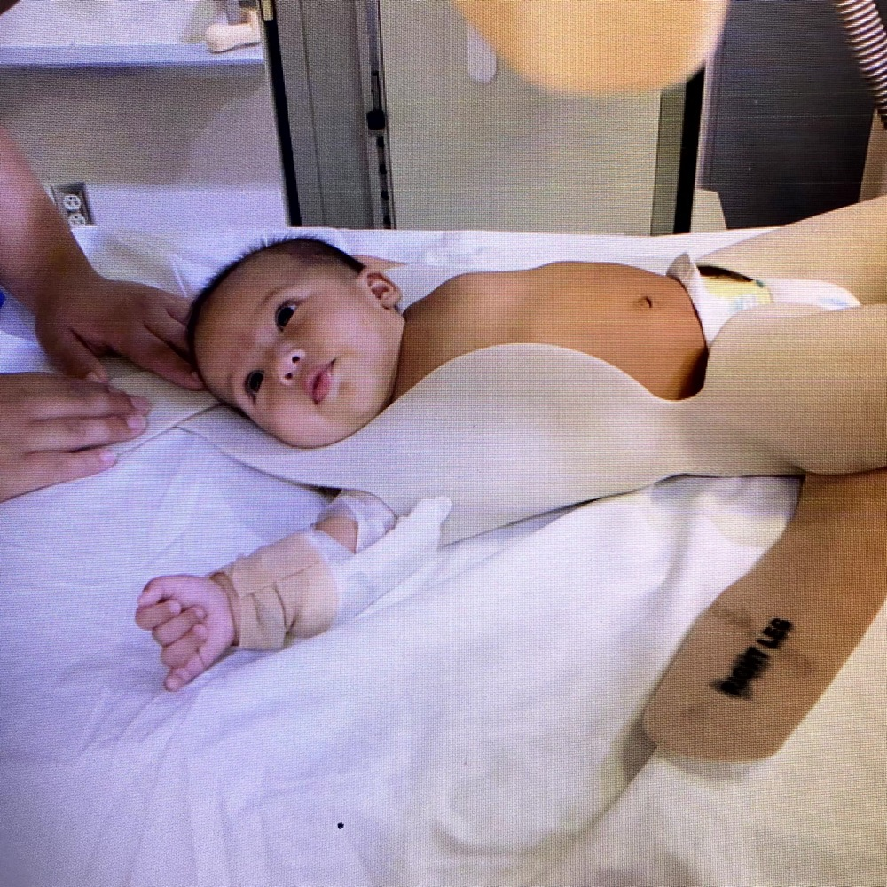
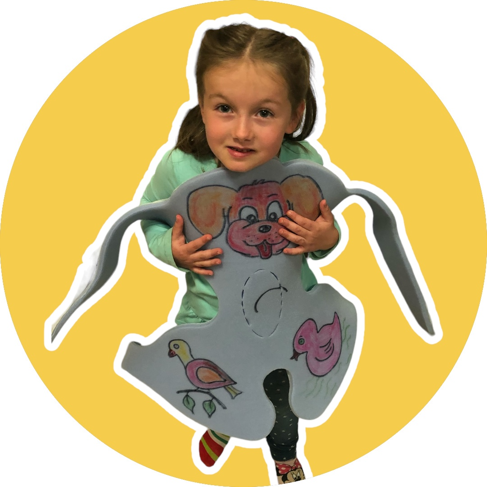
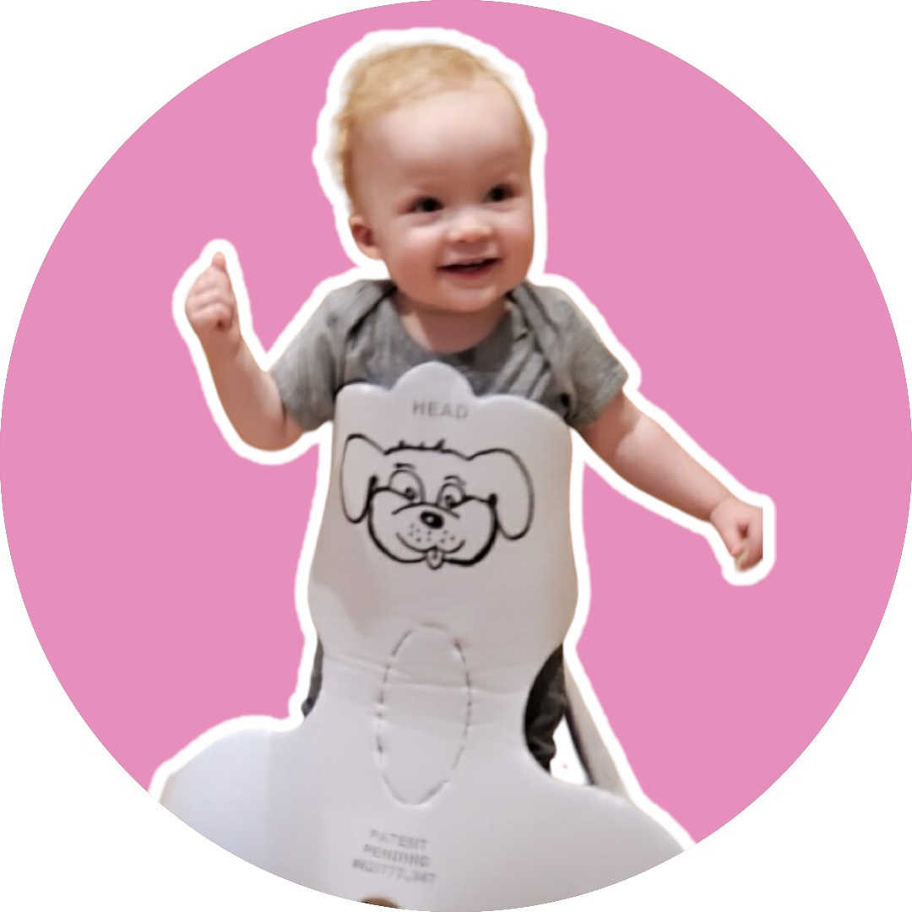
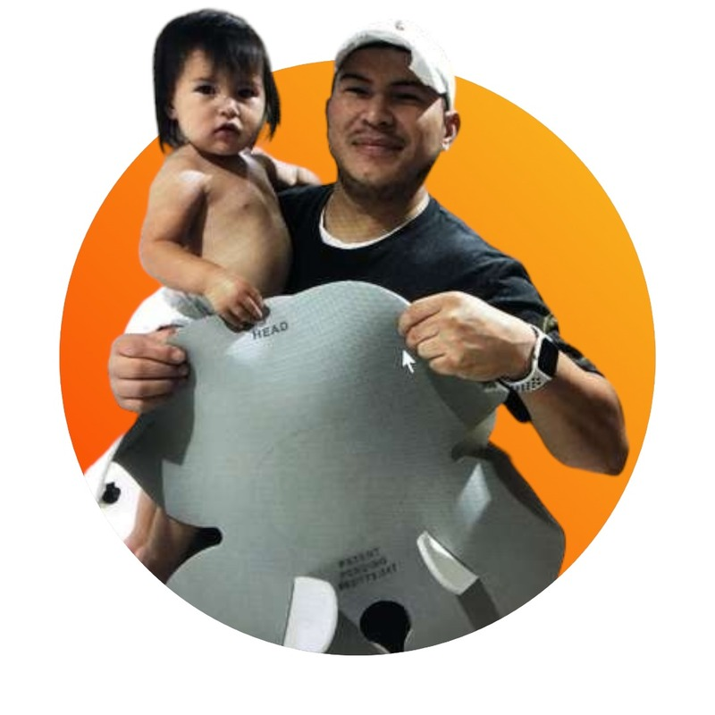
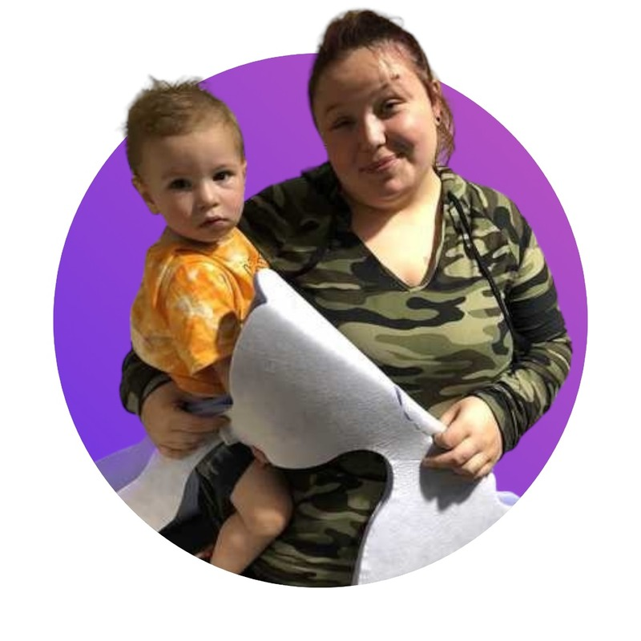

FOR THE CHILD
Support the child.
Support the head and torso together during brief medical procedures.
DURABLE. REUSABLE. CHILD-FOCUSED.
Brief procedures can be a big moment for a small child. The Pediatric Position Holder is designed to support positioning while giving clinicians access to the area they need to treat.
Developed for brief medical procedures.
Now prompting conversations with ground and air medical transport teams.

FOR THE CHILD
Support the head and torso together during brief medical procedures.
FOR THE CLINICIAN
Position the limbs needed for the procedure while keeping the chest and abdomen visible.
FOR REPEATED USE
The same holder design, with more durable material for reuse.
THE DESIGN
Positioning should serve the procedure and the patient. The holder’s design brings support and clinical access together.

The holder supports the head and torso together during brief procedures. Its design remains the same in the durable, reusable version.
The holder allows selective positioning of the arms and legs while leaving the chest and abdomen visible. Ask the team how it accommodates your procedure.
The design is unchanged. More durable material makes the holder reusable. Contact the inventors for material details and cleaning and reuse instructions.
For use by healthcare professionals with continuous patient supervision during brief procedures.
Patent & device classificationCHILDREN, FAMILIES & CARE TEAMS
Children meeting the holder. Parents sharing their experience. Clinicians describing its use in their work.


FROM THE CARE TEAM
“This pediatric holder is a great solution for a common problem.”
Radiology Technician
University Medical Center

A PARENT’S PERSPECTIVE
“My daughter was so happy you let me stay in the room during the procedure. My daughter stayed focused on me and the Q holder and less on the room and scary machines.”
Dad of a 2-year-old
Clovis, New Mexico

A PARENT’S PERSPECTIVE
“My son was wiggling too much to allow the technologist to get good ultrasound pictures. After we put on the foam holder, the technologist was able to get clearer pictures.”
Mom of a 16-month-old
Hobbs, New Mexico
“Because we used the Pediatric Position Holder, the entire procedure was obviously less stressful on the child and I could see that the parents were less stressed as well. I was glad that the holder allowed us to get clear images the first time we tried.”
Pediatric Nurse, University Medical Center
“This pediatric holder is a great solution for a common problem.”
Radiology Technician, University Medical Center
Photos and accounts from the holder’s development and use, shared with permission. “The Q” is another name used for the Pediatric Position Holder. The design is unchanged; the team is working with more durable material for reuse. Individual experiences do not establish clinical outcomes.
CARE SETTINGS
Explore the clinical contexts behind the design and the conversations shaping what comes next.
Positioning children for brief imaging examinations was the starting point for the invention.
Explore the clinical backgroundLaceration repair, IV access, and other brief procedures raise the same practical question: how do we help a child hold still?
Discuss a procedureTransport professionals have expressed interest in the design. We welcome discussions about their positioning needs.
Potential application; transport suitability requires evaluation.
Share your team's needs FRANK LOUIS QUATTROMANI, M.D.
FRANK LOUIS QUATTROMANI, M.D.THE EXPERIENCE BEHIND THE INVENTION
Pediatric Radiologist & Co-Inventor
Dr. Quattromani brings five decades of pediatric radiology experience to the Pediatric Position Holder. His career spans clinical practice, medical education, and military service, with a firsthand understanding of the challenges of positioning children for care.
Co-Inventor & Product Designer
A CLOSER LOOK
Explore the materials, clinical context,
and potential applications.
The material has changed; the design has not. The holder was originally developed with inexpensive material for single use. The team is now working with more durable material for reuse, and the illustrations shown here still represent its design.
The holder is designed to support positioning. It does not replace a clinician’s assessment, communication with the child and family, or appropriate comfort and coping measures.
Ambulance and helicopter medical transport professionals have expressed interest. That interest is a starting point for evaluation, rather than confirmation of suitability for use in transit.
The invention grew out of pediatric radiology practice. Read the patent and device classification, or contact the team to discuss the development history, supporting material, and current intended use.
LET’S TALK ABOUT YOUR SETTING
Speak with the team about the reusable holder,
current product details, or a potential application.